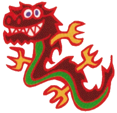

From September 4 to 24, 2001, the Rodney character goods store m.i.x! hosted "Rodney Special · PaRappa the Rapper in Fukuoka" on the M3F "Incube" floor of the Solaria Stage building in Tenjin, Fukuoka. Alongside an expanded goods sale, the event featured an inflatable PaRappa house, a quiz rally, and scheduled visits from walk-around costume characters: PaRappa & Thunder Bunny (September 8–9 and 22–24) and PaRappa & PJ Berri (September 15–16). 2001年9月4日〜24日、福岡・天神のソラリアステージビルM3F「インキューブ」にて、ロドニーキャラクターグッズショップm.i.x!による「ロドニースペシャル・パラッパラッパー in FUKUOKA」が開催されました。グッズ拡大販売に加え、パラッパの家、クイズラリー、そして着ぐるみの来店（パラッパ＆サンダーバニー：9月8・9日、22〜24日／パラッパ＆PJベリー：9月15・16日）が行われました。
Everything on this page is a firsthand account. The photos and commentary come from a five-part "触れあいレポート" (meet-and-greet report) written by a Fukuoka-based fan, the MoonStar, on the "Hobby Room" section of their personal site. They attended three of the mascot visits — September 8, 16 and 24 — and documented the venue in detail; the captions below follow their observations and quotes, and each section links to the original page. The blogger hides their own face behind a self-drawn cartoon in every photo. All photos © the MoonStar. このページの内容はすべて当事者による現地レポートです。写真と解説は、福岡在住のファンthe MoonStarさんが個人サイトの「趣味の部屋」に掲載した全5ページの「触れあいレポート」によるものです。9月8日・16日・24日の3回の着ぐるみ来店に参加し、会場の様子も詳しく記録されています。以下のキャプションはブログ主の観察とコメントに沿っており、各セクションから元のページにリンクしています。写真ではブログ主の顔が自作のイラストで隠されています。写真はすべて the MoonStar さんのものです。
Source: Meet-and-greet report: Prologue — firsthand report and photos by the MoonStar, from the "Hobby Room" (趣味の部屋) section of their site. 出典：触れあいレポート：序章 — the MoonStar「趣味の部屋」より。ブログ主本人による現地レポートと写真です。

Source: Meet-and-greet report: Venue guide — firsthand report and photos by the MoonStar, from the "Hobby Room" (趣味の部屋) section of their site. 出典：触れあいレポート：会場案内 — the MoonStar「趣味の部屋」より。ブログ主本人による現地レポートと写真です。


Source: Meet-and-greet report: September 8, PaRappa & Thunder Bunny — firsthand report and photos by the MoonStar, from the "Hobby Room" (趣味の部屋) section of their site. 出典：触れあいレポート：9月8日 パラッパ＆サンダーバニー — the MoonStar「趣味の部屋」より。ブログ主本人による現地レポートと写真です。


Source: Meet-and-greet report: September 16, PaRappa & PJ — firsthand report and photos by the MoonStar, from the "Hobby Room" (趣味の部屋) section of their site. 出典：触れあいレポート：9月16日 パラッパ＆PJ — the MoonStar「趣味の部屋」より。ブログ主本人による現地レポートと写真です。


Source: Meet-and-greet report: September 24, PaRappa & Thunder Bunny — firsthand report and photos by the MoonStar, from the "Hobby Room" (趣味の部屋) section of their site. 出典：触れあいレポート：9月24日 パラッパ＆サンダーバニー — the MoonStar「趣味の部屋」より。ブログ主本人による現地レポートと写真です。